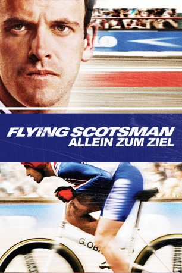

#3045 Flying Scotsman - Allein zum Ziel
 gesehen am 11.10.2018
gesehen am 11.10.2018
 
 IMDB-Wertung: 7.1 / 10
IMDB-Wertung: 7.1 / 10  Metascore: 49
Metascore: 49 
Graham Obree wächst in ärmlichen Verhältnissen auf, verliert aber nie den Glauben, einmal ein ganz Großer im internationalen Radsport zu werden. Nur sein Kumpel Malky, der Priester Baxter und seine Frau Anne unterstützen ihn. Als Obree schließlich mit einem selbst gebastelten Gebilde aus Alteisen tatsächlich 1993 Weltmeister in der Einer-Verfolgung und Stundenweltrekordler wird, ist er am Zenit seiner Karriere angelangt - doch dann ändern die Funktionäre das Reglement, und alles Erreichte löst sich in nichts auf.
Jahr: 2006
Dauer: 114 Minuten
FSK: 6
Land: Deutschland Studio: Central FilmTonspuren: DD2.0 - ,
Untertitel:
Auflösung: 1080p (1920x1040) Größe: 7229 MB
Genre: Drama, Sport
Regisseur: Douglas Mackinnon
Drehbuch: John Brown, Simon Rose, Declan Hughes
Soundtrack: Martin Phipps
Darsteller:
 Jonny Lee Miller als Graeme Obree
Jonny Lee Miller als Graeme Obree- Sean Brown als Young Graeme Obree
 Billy Boyd als Malky
Billy Boyd als Malky Laura Fraser als Anne Obree
Laura Fraser als Anne Obree Brian Cox als Douglas Baxter
Brian Cox als Douglas Baxter Ron Donachie als Scobie
Ron Donachie als Scobie- Morven Christie als Katie
 Steven Berkoff als Ernst Hagemann
Steven Berkoff als Ernst Hagemann Erich Redman als Second Cycling Official
Erich Redman als Second Cycling Official- David Hounslow als Specialized Representative
 Niall Greig Fulton als Adult Gang Leader
Niall Greig Fulton als Adult Gang Leader- Joseph Balderrama als Santiago , uncredited
 Forbes KB als Bailiff , uncredited
Forbes KB als Bailiff , uncredited- Joseph Carney als Child Gang Leader
- Crawford McInally-Kier als First Child Bully
- Jan Plazalski als Second Child Bully
- Niall Macgregor als Graeme's Father
- Julie Austin als Graeme's Mother
- Morag Calder als First Office Receptionist
- Jean Marie Coffey als Woman at Finish Line
- Christopher Anderson als Baby Ewan
- Pauline Lynch als Second Office Receptionist
- Gary Hollywood als Cycle Courier
- Moray Hunter als Armstrong
- Kieran Tennant als First Kid in Street
- Stuart Glen als Second Kid in Street
- Philip Wright als Francesco Moser
- Dennis Matsuki als First Cycling Official
- Peter Majer als Third Cycling Official
- Adrian Grove als Chris Boardman
- Daniel André Pageon als French Mayor
- Grant Aylward als Mayor's Assistant
- Gudrun Mangel als Mayor's Wife
- Caitlin Brennan als Daughter on Bike
- George Drennen als Father on Bike
- Ashok Srivastava als Doctor
- Nathan McGrath als Toddler Ewan
- Tino Czaja als Track Official , uncredited
- Angelika Gersdorf als (uncredited
- Ralf Klopotteck als Referee , uncredited
- Alan Marsh als Extra , uncredited
Datei: X:\2006(A-F)\Flying Scotsman - Allein zum Ziel (2006, FSK6, 1920x1040).mkv seit 19.01.2016
Festplatte: HD 2005(G-Z)-2006(A-Z)
 Es gibt insgesamt 56 Filme in der Gruppe '2006(A-F)'
Es gibt insgesamt 56 Filme in der Gruppe '2006(A-F)'